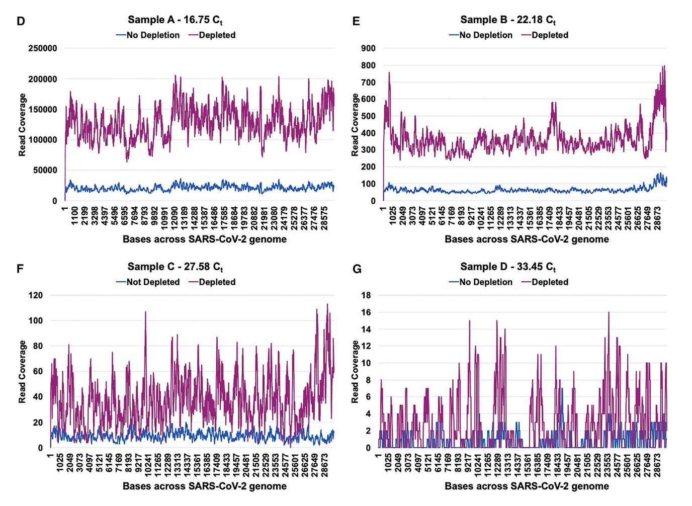
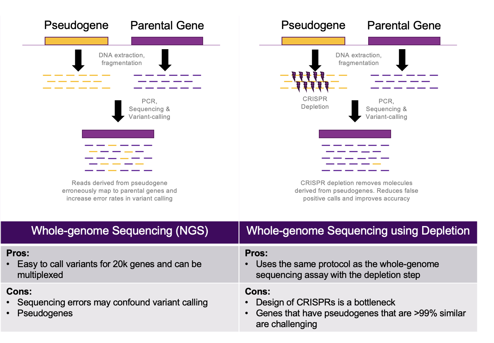
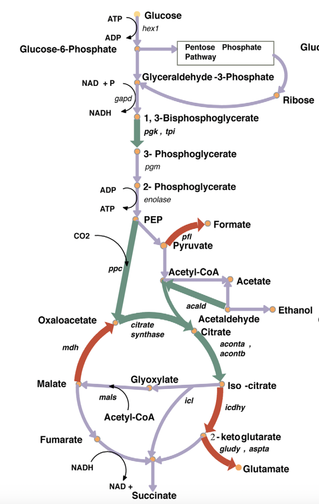

Sridhar Ranganathan
Bioinformatics | Genomics | AIML
Bioinformatics expert passionate about translating data into innovative biological solutions and driving impactful collaborations in genomics and machine learning.


Jumpcode Genomics is a CRISPR startup company based in San Diego, CA. Founded in 2018 by Keith Brown, Jumpcode is developing CRISPR enzymes aimed at cleaning up undesirable molecules from NGS libraries. Jumpcode has developed and launched multiple products under the CRISPRclean and DepleteX brands to address genomics markets.
I am the founding bioinformatics scientist and an independent contributor (IC) that developed all foundational bioinformatics algorithms and pipelines. I am a strong hands-on leader who thrives on transforming genomics data into actionable insights for commercial development of products.
Programming Languages: Python, Java, R
Workflow Languages: Snakemake, NextFlow
Genomics Analysis: RNA-seq, scRNA-seq, WGS, Variant Calling
AI/ML: sklearn, pytorch, tensorflow, keras, LLMs, CNNs, Regression models, Feature-selection
Data: SQL, AWS infrastructure (certified)
Software Dev: Github, Atlassian, Agile DevOps
CLIA, CI/CD, 23CFR, HIPAA and GDPR-compliant development practices
Since the introduction of CRISPRs for DNA editing, I have had extensive experience playing with many available tools. At Jumpcode, I have re-purposed CRISFlash, FlashFry and CRISPOR for CRISPR-gRNA designs. In addition, I have written customized code to handle tool output for compatibility with our pipelines.
Jumpcode Genomics team was awarded a $750k contract from BARDA to develop an automated workflow leveraging our CRISPR depletion technology to detect infectious agents using metatranscriptomics sequencing. In 2023, we published an article demonstrating a proof of concept of this methodology. Our team used CRISPR-RNPs designed to remove highly abundant human-derived RNA (e.g. rRNA, house-keeping genes) in libraries generated from nasal samples of patients tested positive for SARS-CoV-2. Bioinformatics analysis I performed indicated that this CRISPR-enhanced metatranscriptomics workflow could lead to an increased sensitivity and specificity for SARS-CoV-2. 
Jumpcode collaborated with BARDA and their partners to further advance this technology by removing human-derived mRNA (in addition to rRNA). We assembled bioinformatics pipelines that produced ~1.2 million CRISPR-gRNAs that were synthesized and used in a one-pot depletion reaction. To my knowledge, I believe this is the first and only endeavor that has successfully synthesized and used more than a million Cas9-RNPs in any biotechnological context. Additionally, we demonstrated that the entire workflow can be automated in a library preparation instrument seamlessly and reduced turn around times for the workflow.
Towards the end of 2024, the HaDEA organization (Europe) recognized the importance of this technology and awarded us $24 million to develop a fully automated, cloud-connected instrument that can perform RNA extraction, library preparation, depletion, library synthesis in a fully automated manner. We are developing this instrument for clinical approval in Europe and have received funding from the CDC to initiate clinical approval process in the US.
Pseudogenes are relics of the DNA evolutionary process. They are replicas of functional genes. Many pseudogenes remain inactive in the genome. Since they are highly similar to their parent genes, molecules originating from pseudogenes often contaminate sequencing datasets by diluting or exaggerating variant calls. For instance, a major challenge in diagnosing Lynch syndrome is the presence of the highly homologous pseudogene PMS2CL. A region covering PMS2 exons 12–15 has very high similarity with PMS2CL, causing reads to be misaligned and leading to unreliable variant calls in this critical region.
At Jumpcode, we developed a CRISPR-based depletion technology that can precisely remove pseudogene-derived molecules in DNA sequencing library preparation workflows. We collaborated with Revvity Omics (previously Perkin Elmer) to develop an assay specifically designed for removing pseudogenes that contaminate variant calls for a few genes tested in new-born screening (NBS) panels.
The bioinformatics challenge here was two-pronged. First, we had to use heavily constrained paradigms to design CRISPR-gRNAs that target the pseudogene-derived molecules with high specificity. We deployed CRISflash to identify, filter and select gRNA targets. The high degree of similarity between the pseudogenes and parent genes necessitated us to use different flavors of the CAS enzyme - e.g. Cpf1, Cas12a, Cas13, SpCas9. We had to use these CRISPR-RNPs combinatorially in WGS assays that presented additional design problems. Secondly, we deployed clinically used variant calling pipelines to test the efficacy of the process in enhancing variant calling accuracies.
As proof of this concept, we targeted the pseudogenes of three important genes in NBS panels - ABCD1, GBA1, and CYP21A2. We demonstrated that ~95% of false positive calls for variants were eliminted. We are further working on developing this technology to broaden its applicability to breast cancer and colon cancer screening panels potentially targeting >4000 pseudogenes.
Our work here was instrumental in securing ~$400k in non-dilutive funding from NHGRI (SBIR Phase 1) for technology development.
Single cell RNA-sequencing (scRNA-seq) is now increasingly being used for immunology and cancer research. Identifying cell types using transcriptomics signatures specific to a given cell type forms the cornerstone of this technology. The technology requires the sequencing of several thousands cells at high sequencing depth (typically >100 million reads). However, scRNA-seq relies on sequencing reads mapping to only a few hundred (if not a few thousand) genes. Reads that map to the majority of the genes in human transcriptome are simply tossed out because of two main reasons:
Jumpcode Genomics developed its CRISPRclean technology to deplete these highly abundant genes in scRNA-seq workflows. My team and I performed the following tasks to enable this endeavor:
We launched the DepleteX Single Cell RNA Boost kit thanks to the contributions listed above. Notably, 10x Genomics and Pacific Biosciences recognized the importance of this product by calling them companion products for their products in the market addressing single cell customers.
The versatility offered by DNA sequencing to interrogate the genome is unparalleled. However, the use of whole-genome sequencing (WGS) to study targeted sections of genomes presents some challenges. Firstly, the method produces sequencing datasets with a uniform coverage across the genome. This amounts to wastage of sequencing reagents and data when only a fraction of the genome is of interest to your research goals. Secondly, WGS produces lower coverages for larger genomes (compared to the human genome) and those that are polyploids which makes it difficult for genotyping and variant analysis. Therefore, these and several other applications fail to fully exploit the power of WGS. More examples:
Thermo Fisher Scientific is an industry leader in scientific instrumentation and reagents, with a dedicated Cell and Gene Therapy group supporting researchers and companies across the entire discovery-to-commercialization pipeline. The Cell and Gene Therapy group offers custom solutions, expertise in clinical research workflows, and advanced manufacturing technologies such as closed systems and single-use processing equipment to accelerate cell therapy development and scale-up. Notably, the group's advanced therapies centers, including facilities in Carlsbad, CA, provide collaborative spaces for cGMP process optimization and regulatory support
Thermo Fisher is at the forefront of CRISPR genome editing, offering a comprehensive suite of high-quality products for CRISPR-Cas9 workflows, including GMP-manufactured Gibco CTS TrueCut Cas9 proteins, mRNA and plasmid systems, lentiviral gRNA libraries, and specialized electroporation equipment for cell therapy applications. Products like TrueCut Cas9 Protein and Invitrogen LentiArray gRNA libraries have achieved standout performance in primary, stem, immune, and difficult-to-transfect cell types, making them ideal for research and therapeutic development of CAR-T, TIL, and other gene-modified cell therapies.
I joined Life Technologies (acquired by Thermo Fisher in 2013) as a Staff Scientist in their Synthetic Biology R&D division. I functioned with increasing responsibilities working with and leading teams in Bangalore, India and Singapore to develop customer-facing software tools for gene-editing applications. I worked extensively on the development of VectorNTI suite of software and then transitioned to developing cloud-based tools to enable customers easy access to a wide range of kits, reagents and services offerings.
Programming Languages: Python, Java, R
Genomics Analysis: Genome assembly tools (SPAdes, Velvet), RNA-seq, WGS
AI/ML: Regression models, Feature-selection
Data: SQL, AWS infrastructure (certified)
Software Dev: Github, Atlassian, Agile DevOps
Lab: PCR, NGS library preparation, RNA & protein transfection
The group is led by Prof. Costas D. Maranas, Donald B. Broughton Professor of the Department of Chemical Engineering at Penn State.The C. Maranas group develops and deploys computational framework informed by systems engineering and mathematical optimization to understand, analyze and redesign metabolism and proteins. Research interests include: Computational protein design; enzyme and antibody engineering; design of protein pores for bioseparations; reconstruction, curation and analysis of metabolic networks; computational strain design and synthetic biology; metabolism of photosynthetic organisms; metabolism of obligatory anaerobes; modeling of microbial communities; optimization theory and algorithms. Visit group website
I was a graduate researcher in Prof. Costas D Maranas lab. Our research goals were to develop computational models of bacterial metabolism from genomics, transcriptomics and metabolomics datasets. Subsequently, we developed algorithms that can use these models to predict what genes can be manipulated to make them overproduce certain value-added biochemicals of interest. Several biotech companies rely on these models and algorithms. For example, Geno uses these models to engineer recombinant strains of bacteria to synthesize 1,4-butanediol (BDO).  OptForce is a computational optimization framework for metabolic engineering that systematically identifies all possible genetic interventions required to achieve targeted overproduction of biochemicals in microorganisms. Unlike traditional approaches, OptForce leverages flux measurements a nd mathematically contrasts wild-type and overproducing strains to pinpoint which metabolic reaction fluxes need to be increased, decreased, or eliminated. The method groups these reactions hierarchically and then extracts a minimal, actionable set of genetic modifications—the FORCE set—that ensures the metabolic network supports the desired product yield. Successfully applied to succinate production in E. coli, OptForce reveals both intuitive and unforeseen engineering strategies, including coordinated changes distant from the core product pathway, guiding experimental design for strain optimization.